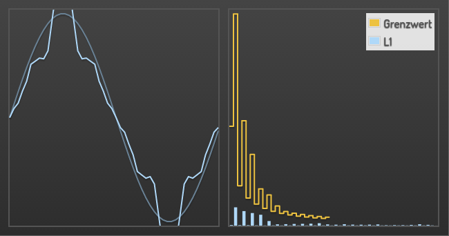

Das PowerSpectrum Plugin¶
Beschreibung¶
Das Plugin erzeugt ein Diagramm, dass das aktuelle Strom- oder Spannungspektrum der Stromversorgung darstellen kann. Hierzu werden die KNX Diagramme verarbeitet, die das Enertex Smart Meter versenden kann.
Einstellungen¶
Für eine grundsätzliche Erklärung des Aufbaus der Konfiguration und der Definition der im folgenden benutzten Begriffe (Elemente, Attribute) sollte zunächst dieser Abschnitt gelesen werden: Seiten und Struktur der CometVisu.
Erlaubte Attribute im Switch-Element
| Element | Attribut | |||
|---|---|---|---|---|
| Name | Inhalt | Beschreibung | ||
| powerspectrum | type | string | Wahl der Art des Spektrums durch die Angabe von “current” oder “voltage”. | |
| showlegend | true or false | Boolscher Wert um eine Legende anzuzeigen. | ||
| singlephase | true or false | Boolscher Wert um auszuwhälen, dass nur eine Phase angezeigt wird. | ||
| spectrumonly | true or false | Boolscher Wert um die Anzeige auf das Spektrum selbst zu beschränken. | ||
| limitname | string | Anzeigename für den Grenzwert. Wird in der Legende verwendet. | ||
| limitcolor | string | Farbe für den Grenzwert. | ||
| name1 | string | Anzeigename für die erste Phase. | ||
| color1 | string | Farbe für die erste Phase. | ||
| name2 | string | Anzeigename für die zweite Phase. | ||
| color2 | string | Farbe für die zweite Phase. | ||
| name3 | string | Anzeigename für die dritte Phase. | ||
| color3 | string | Farbe für die dritte Phase. | ||
Attribute im Editor (vereinfachte Ansicht)
Erlaubte Kind-Elemente und deren Attribute
| Element | Attribut | |||
|---|---|---|---|---|
| Struktur | Name | Inhalt | Beschreibung | |
|
colspan | decimal | Spaltenanzahl für dieses Widget. | |
| colspan-m | decimal | Übersteuert die Spaltenanzahl auf mittleren (medium) Browser Größen. | ||
| colspan-s | decimal | Übersteuert die Spaltenanzahl auf kleinen (small) Browser Größen. | ||
| rowspan | decimal | Zeilenanzahl für dieses Widget. | ||
| x | string | Horizontale Position des Widgets auf 2D Seiten. | ||
| y | string | Vertikale Position des Widgets auf 2D Seiten. | ||
| z | string | Für zukünftige Anwendungen reserviert. | ||
| width | string | Breite des Widgets auf 2D Seiten. | ||
| Element | Attribut | |||
|---|---|---|---|---|
| Struktur | Name | Inhalt | Beschreibung | |
|
name * | string | ||
| type | string | |||
| flavour | string | Auswahl der Darstellungsvariante. Siehe auch Flavour. | ||
| color | string | |||
| styling | string | |||
| class | string | Füge dieses Attribut der CSS Klasse hinzu, so dass das Widget durch ein eigenes Stylesheet zusätzlich formatiert werden kann. | ||
|
string | Text um bei dem Widget eine Beschreibung darzustellen. | ||
| Element | Attribut | |||
|---|---|---|---|---|
| Struktur | Name | Inhalt | Beschreibung | |
|
transform * | string | ||
| mode | disable, read, write oder readwrite | |||
| variant | string | |||
| format-pos | decimal | |||
|
string | Die Gruppenaddresse (z.B: 12/0/7) bei KNX-Backends oder der Item-Name beim openHAB-Backend. | ||
XML Syntax minimal¶
Alternativ kann man für das switch Widget auch von Hand einen Eintrag in der visu_config.xml hinzufügen.
Vorsicht
In der Config selbst dürfen NUR UTF-8 Zeichen verwendet werden. Dazu muss ein auf UTF-8 eingestellter Editor verwendet werden!